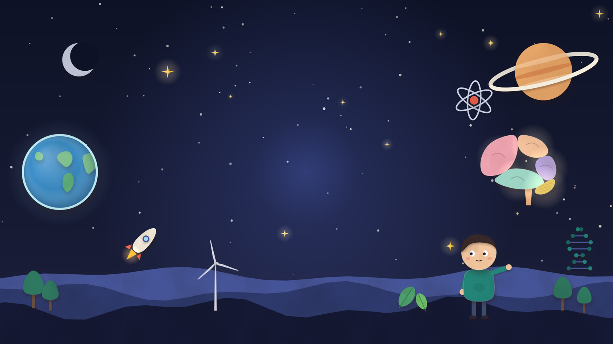
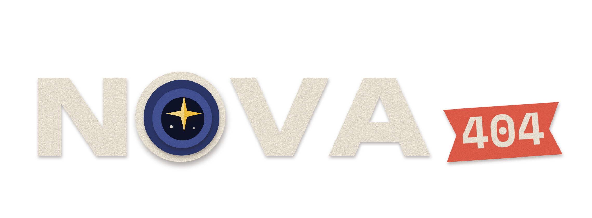
Brand Guidelines & Visual Identity
VERSION 1.0 · 2026 · ภาษาไทย / ENGLISH
Brand core
NOVA คือดาวที่สว่างวาบขึ้นมา เหมือนช่วงเวลาที่เราร้อง "อ๋อ!"
404 คือ "Not Found" หมายถึงความรู้ที่ยังหาไม่เจอ และความเชื่อที่ไม่มีหลักฐานรองรับ
ช่องนี้จึงพาไปหาเรื่องที่หาไม่เจอ แล้วทำให้มันสว่างขึ้น
| ใช่ | ไม่ใช่ |
|---|---|
| "เคยสงสัยไหม…" | "วันนี้เราจะมาพูดถึง…" |
| "นักวิจัยพบว่า…" | "รู้หรือไม่! ช็อก!" |
| "ยังไม่มีใครรู้แน่ชัด" | เดาแล้วพูดเหมือนเป็นข้อเท็จจริง |
| ภาษาพูดที่สุภาพ | ภาษาข่าวหรือภาษาเด็ก |
ผู้ชมอายุ 15–35 ปีที่ดู Shorts ระหว่างวันและอยากได้ความรู้ที่เล่าต่อได้ หัวข้อหลักคือ วิทยาศาสตร์ · ธรรมชาติ · จักรวาล · ร่างกายมนุษย์ · ความเชื่อผิด ๆ · What If
Logo exploration
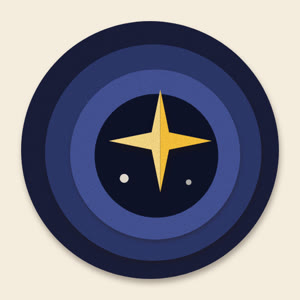
ข้อดี: วงกระดาษซ้อนกันจนเป็นหลุมมืด (404 = สิ่งที่ยังไม่รู้) แล้วมีดาว (NOVA) โผล่ออกมา จึงเล่าชื่อช่องได้ครบในภาพเดียว เป็นวงกลมที่เข้ากับกรอบโปรไฟล์ YouTube ใช้แทนตัว O ในคำว่า NOVA ได้ และโชว์เทคนิคกระดาษตัดได้ชัดที่สุด
ข้อเสีย: ที่ขนาดเล็กมาก ชั้นกระดาษจะกลืนกัน จึงทำเวอร์ชัน mono ที่ลดเหลือ 2 วงไว้ใช้แทน
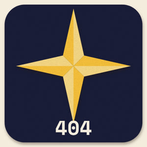
ข้อดี: ดาวพับกระดาษเห็นชัดมากที่ขนาดเล็ก และจำง่าย
ข้อเสีย: ดูทั่วไปเกินไป เพราะดาว 4 แฉกใช้กันมากในโลโก้ AI และ "ประกาย" ทำให้เสี่ยงดูเหมือน generic AI ซึ่ง brief ห้ามไว้ ส่วน 404 ก็กลายเป็นแค่ข้อความประกอบ
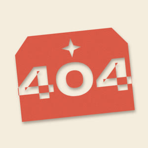
ข้อดี: สื่อเรื่อง "ความเชื่อผิด" ได้ทันที และสนุก
ข้อเสีย: ป้ายตัวเลขอ่านยากที่ 48 px สีแดงทั้งก้อนให้ความรู้สึกเตือนภัยหรือ error มากกว่าความอยากรู้ และขาดความลึกลับของจักรวาล
ผลการเลือก: ใช้ A เป็นสัญลักษณ์ และนำจุดเด่นของ C (ป้ายกระดาษสีคอรัล "404") มาใช้ใน wordmark ส่วนดาวพับของ B ถูกย่อลงไปเป็นดาวที่โผล่จาก portal
Logo system
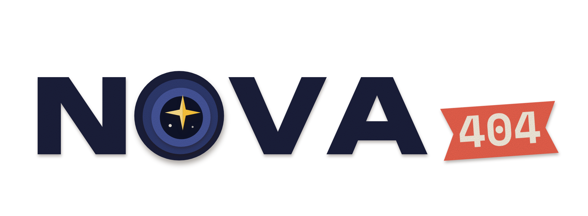
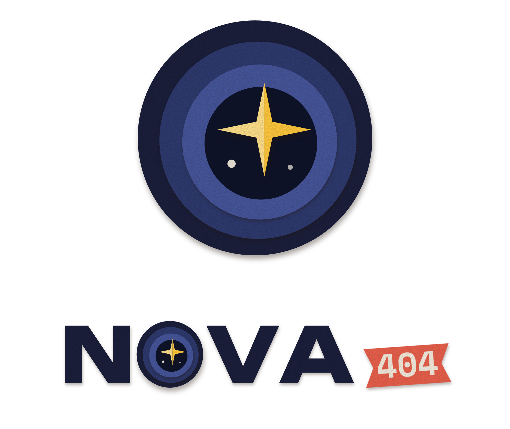
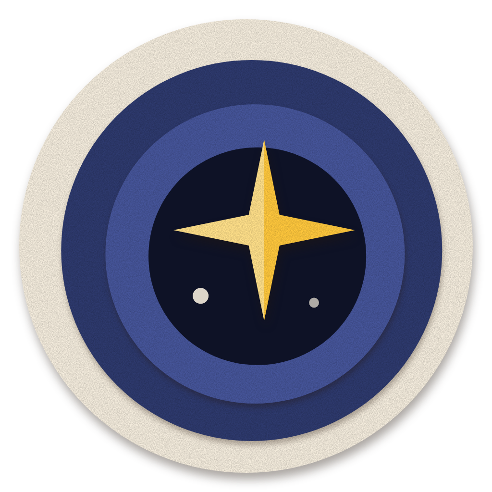
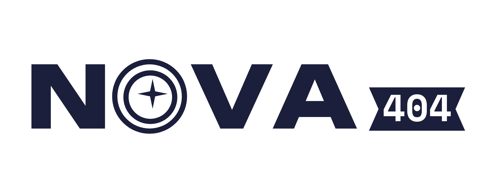
Logo rules
เว้นพื้นที่ว่างรอบโลโก้อย่างน้อย 1 × ความสูงของตัว N (= x) ทุกด้าน ห้ามมีข้อความหรือภาพอื่นเข้ามาในพื้นที่นี้
16 · 24 · 32 · 48 · 88 px
Wordmark ต้องกว้างอย่างน้อย 120 px หรือ 25 มม. ไอคอนต้องมีขนาดอย่างน้อย 24 px ถ้าเล็กกว่า 24 px ให้ใช้เวอร์ชัน mono
Colour
Typography
NOVA
ใช้กับ wordmark, คำภาษาอังกฤษบนปก และตัวเลขใหญ่ที่เป็นภาษาอังกฤษ เขียนด้วยตัวพิมพ์ใหญ่เสมอ ระยะห่างตัวอักษร 0
ทำไมง่วง?
ใช้ 800 กับ Hook และพาดหัว ใช้ 600 กับซับไตเติลและชิป ใช้ 400 กับคำอธิบาย Kanit เป็นฟอนต์เดียวกับที่ใช้ใน Shorts ทุกเรื่องที่ทำมาแล้ว
404 · 8:20
ใช้กับป้าย 404, แหล่งข้อมูล, ตัวเลขข้อมูล, ชิปภาษาอังกฤษ และ timecode ให้ความรู้สึกเหมือน "ห้องแล็บ"
| บทบาท (1080×1920) | ฟอนต์ | ขนาด | สี | หมายเหตุ |
|---|---|---|---|---|
| Hook / ปก | Kanit 800 | 80–96 px | Ink บนการ์ดครีม | ไม่เกิน 2 บรรทัด บรรทัดละ ≤ 16 ตัวอักษร คำเด่น 1 คำอยู่บนการ์ดทอง |
| ซับไตเติล | Kanit 600 | 54 px | ขาว / คำที่กำลังพูดเป็น #FFD84D · ขอบ #1E1A24 | y ≈ 1455 ไม่เกิน 2 บรรทัด กว้างไม่เกิน 860 px |
| ป้ายข้อมูลในภาพ | Kanit 600–700 | 40–52 px | Ink บนครีม/ทอง | อยู่ติดกับวัตถุที่อ้างถึง |
| Topic chip | Kanit 600 / Space Mono 700 | 46 / 30 px | ดูตาราง palette | มุมซ้ายบน x 72, y 238 |
| แหล่งข้อมูล | Space Mono 400 | 28 px | ครีมบนพื้นมืดโปร่ง 78% | x 72, y 1548 (เหนือ UI ของ YouTube) |
Text on screen
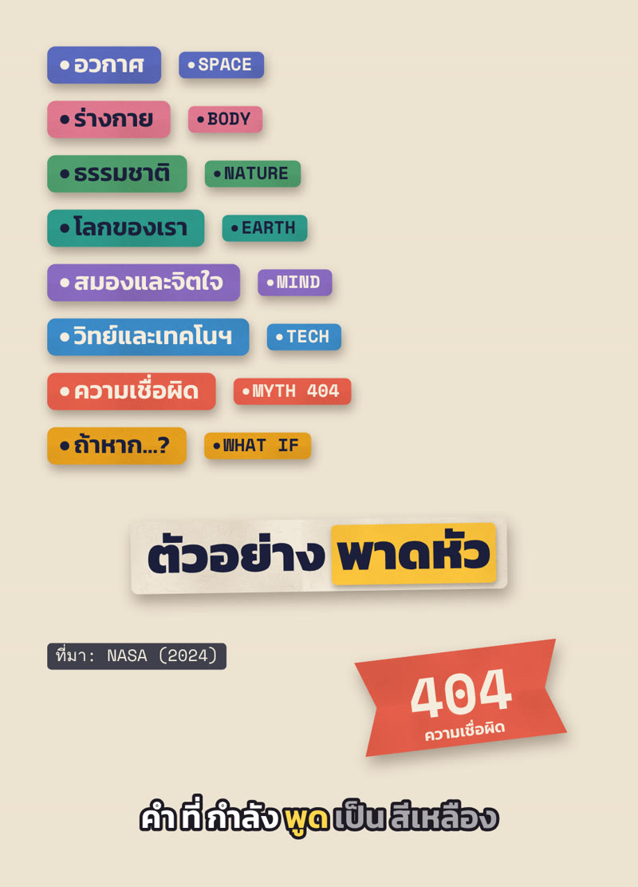
Illustration style
| ชั้น (lv) | เงา | ใช้กับ |
|---|---|---|
| 0 | ไม่มีเงา | ลายบนกระดาษ ช่องว่าง จุดดาว |
| 1 | blur 10 · y 5.5 | รายละเอียดบนวัตถุ ป้ายเล็ก |
| 2 | blur 17 · y 9.5 | วัตถุหลัก ตัวละคร ชิป |
| 3 | blur 24 · y 13.5 | วัตถุพระเอกของฉาก การ์ดพาดหัว ขอบ portal |
| 4 | blur 31 · y 17.5 | สิ่งที่ลอยใกล้กล้อง (ใช้น้อยที่สุด) |
เงาสีน้ำตาลอุ่น rgba(38,24,14,.30–.40) แสงมาจากซ้ายบนเสมอ เงาจึงตกไปทางขวาล่าง ทุกชิ้นมีลายเส้นใยกระดาษ (FIBER) คูณทับ 0.7 ค่าทั้งหมดมาจาก cut() ใน paper.js
ฉากกลางคืนใช้ Deep Void ไล่ไป Ink โดยมีแหล่งแสงอุ่นจุดเดียว (ดาว ดวงอาทิตย์ หรือหน้าจอ) ส่วนฉากกลางวันใช้พื้นกระดาษพาสเทลตามสีหัวข้อ และมีวงกลมกระดาษซ้อน 2 ชั้นอยู่หลังวัตถุพระเอก (ดูหน้า 13)
Composition
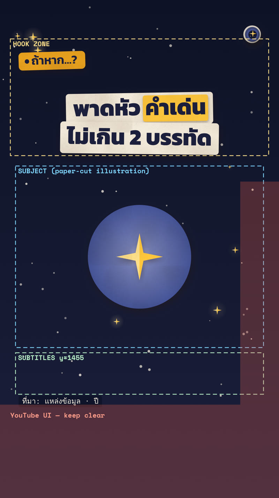
| โซน | พิกัด (1080×1920) | ใช้วางอะไร |
|---|---|---|
| Hook | y 150–600 | ชิปหัวข้อ + พาดหัว 2 บรรทัด อ่านจบใน 1.5 วินาที |
| Subject | y 640–1340 | วัตถุพระเอก 1 ชิ้นอยู่กลางเฟรม มีวงกระดาษรองหลัง |
| Subtitles | y ≈ 1455 | ซับคาราโอเกะ ไม่เกิน 2 บรรทัด |
| Source | y ≈ 1548 | ป้ายแหล่งข้อมูล ชิดซ้าย |
| UI ของ YouTube | y > 1560 · x > 930 | ใส่ได้เฉพาะของตกแต่ง ห้ามมีข้อความ |
| Brand bug | x 976, y 132 · r 34 | สัญลักษณ์ portal ขนาดเล็ก โปร่ง 90% |
Motion
| องค์ประกอบ | การเคลื่อนไหว | เวลา |
|---|---|---|
| วัตถุเข้าฉาก | pop (backOut) จาก 0 → 1 | 0.4–0.6 s |
| ข้อความ | pop + ลอยขึ้น 26 px | 0.25 s |
| เปลี่ยนฉาก | dissolve ของ timeline.js หรือ "เปิดแผ่นกระดาษ" (portal wipe) | 0.3–0.5 s |
| Portal wipe | วงกระดาษ 4 วงขยายจากวัตถุออกไปเต็มเฟรม | 0.6 s |
| Idle | ลอยขึ้นลง ±6 px, หายใจ ±3%, ดาวกะพริบ | ต่อเนื่อง |
| Logo sting | วงเปิด → ดาวหมุนเข้า → ตัวอักษรขึ้น → ป้าย 404 ประทับ | 2.4 s |
| End card | portal + wordmark + "ติดตามไว้ ไม่หลงทางความรู้" | 2–3 s |
ห้ามแสงกะพริบเกิน 3 ครั้งต่อวินาที ห้ามสั่นกล้อง และห้ามใช้เอฟเฟกต์ glitch ที่ทำให้อ่านไม่ออก ถ้าจะสื่อ 404 ให้ใช้ป้ายกระดาษแทน
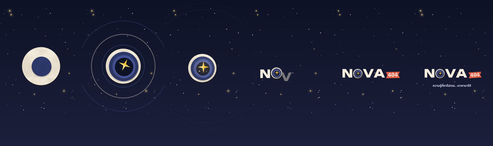
templates/nova404_logo_sting.mp4 · nova_brand.js → novaSting(t)
Characters & objects
props.js: sky cloud sun moon stars earth turbine solarRow battery tree building car train …
sleepy: person brain gauge zzz
brain10: brainBuddy neuron eeg
nails: heart ecg magnifier
sweat: thermometer flame bottle
sneeze: airway spray tissue
sleepdebt: bed coin piggy
nova_brand.js: novaPortal novaStar novaChip novaHook novaSource novaMyth novaSky novaSting novaEnd
One system, many topics
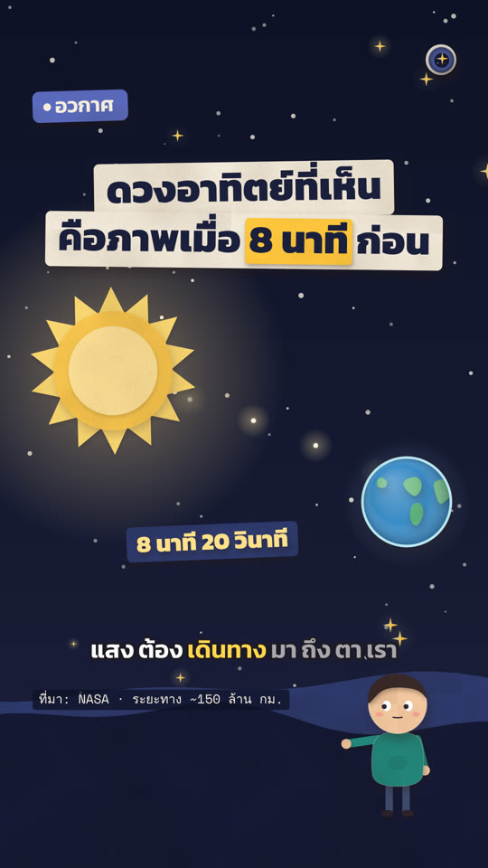
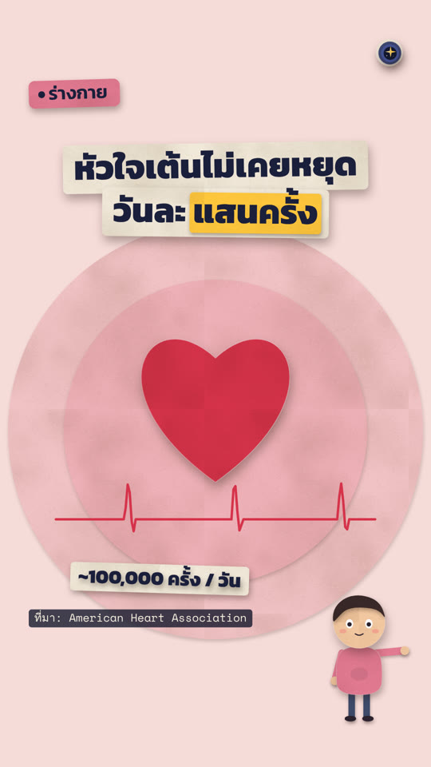
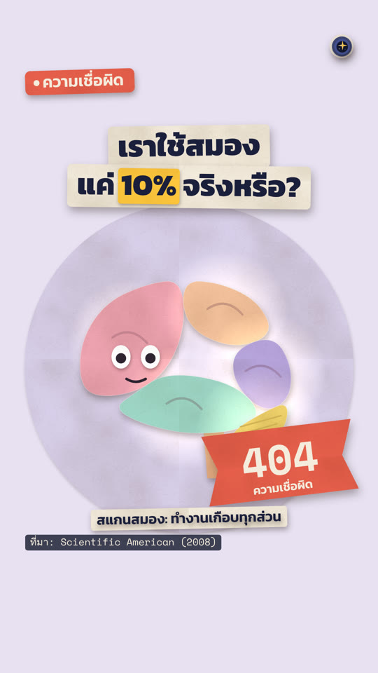
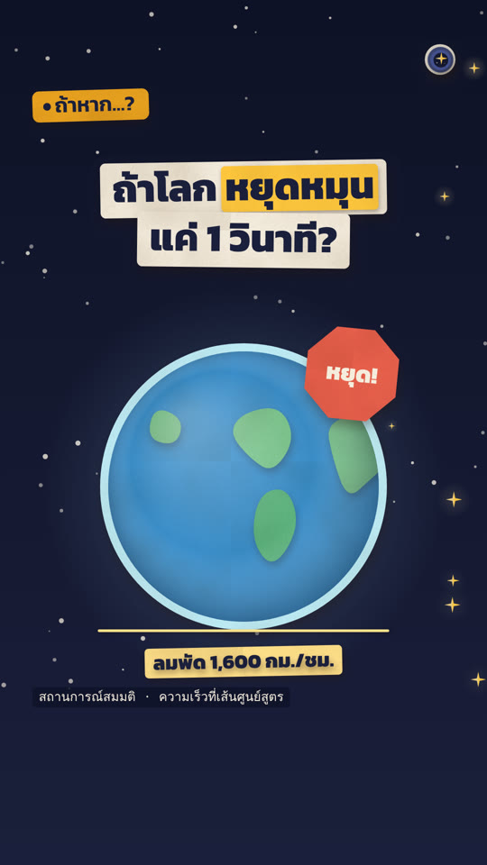
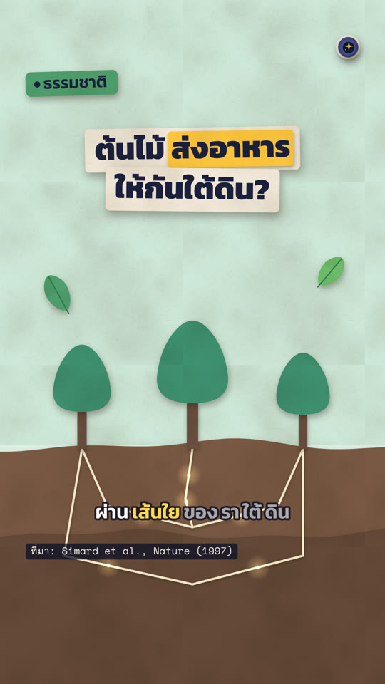
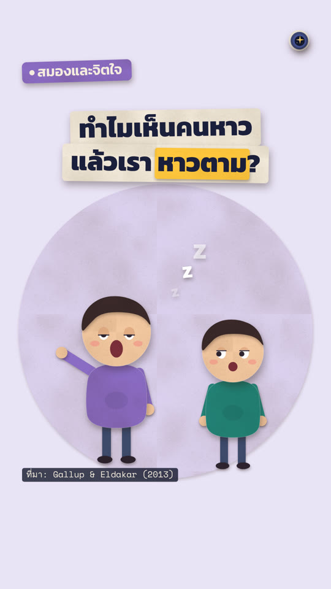
สิ่งที่คงที่ในทุกคลิป: ตำแหน่ง chip, การ์ดพาดหัว, ฟอนต์, ซับไตเติล, ป้ายแหล่งข้อมูล, brand bug และกติกาเงา · สิ่งที่เปลี่ยนตามหัวข้อ: สีพื้น (กลางคืนสำหรับอวกาศและ What If, พาสเทลตามสีหัวข้อสำหรับเรื่องอื่น), สี chip และวัตถุพระเอก
Channel
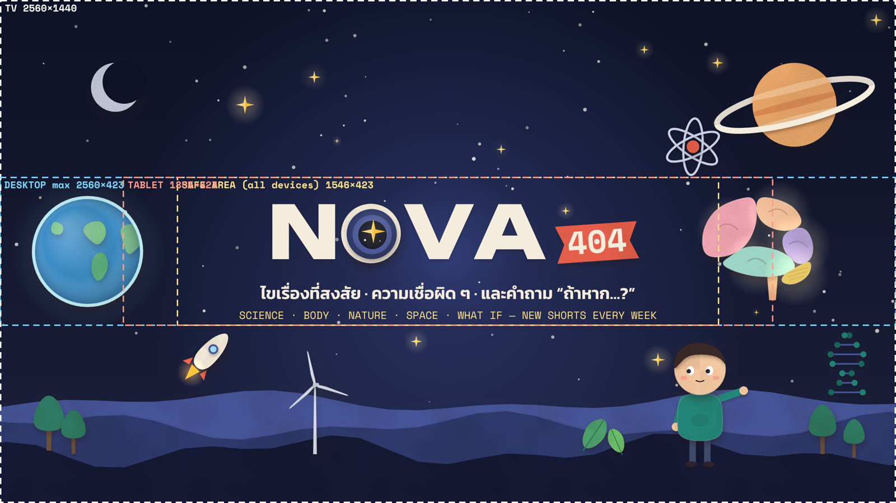
ขนาด 2560×1440 px โลโก้และข้อความทั้งหมดอยู่ใน safe area 1546×423 ส่วนแถบ desktop (2560×423) มีโลกและสมองอยู่ทั้งสองข้าง จึงไม่ดูโล่งเมื่อถูก crop
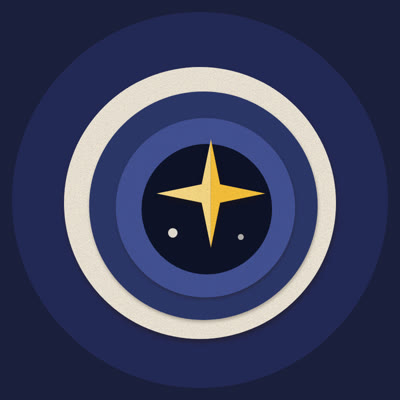
โปรไฟล์ 800×800 px ใช้สัญลักษณ์ portal บนพื้น Ink เพราะ YouTube จะ crop เป็นวงกลม
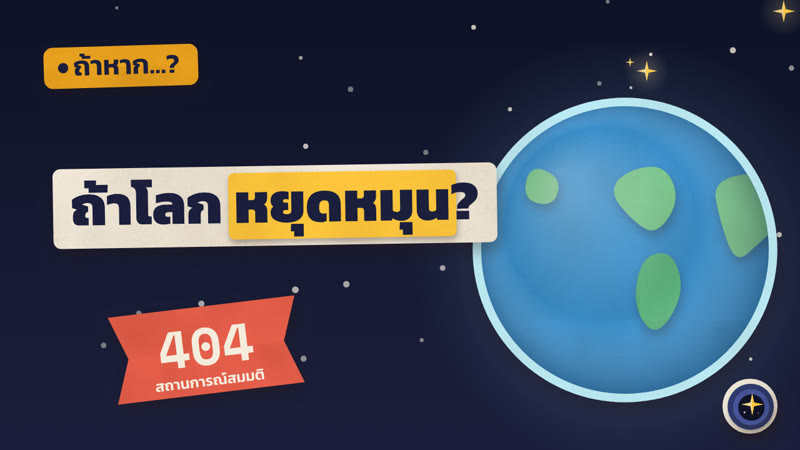
Thumbnail 1280×720 สำหรับ playlist หรือคลิปยาว
Files
ความรู้ที่หาไม่เจอ… เราหามาให้